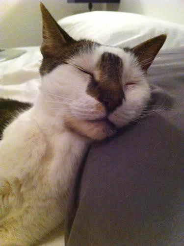

Simon sleeping soundly at his first Furry Sublet
It all started over lunch one day with a friend. She'd just gotten a big promotion at work and was thrilled about all the international travel she'd be doing. Paris one month, Hong Kong another -- not to mention all the stints to London.
There was only one problem... her cat Simon.
There was no way she would board him for that long, and having someone just stop in didn't seem fair either. Simon was used to regular human interaction every day. "If only he could sublet from another animal lover and have the consistent companionship his personality craves," she lamented.
At that moment the proverbial light bulb went off in my head. Why not create a service for this type of situation? People's pets subleting apartments from fellow animal lovers. Not only would the animal benefit, the person subleting would have the opportunity to earn some extra cash while also enjoying the temporary company of a furry friend.
And just like that, Furry Sublets was born... and Simon was the first client.